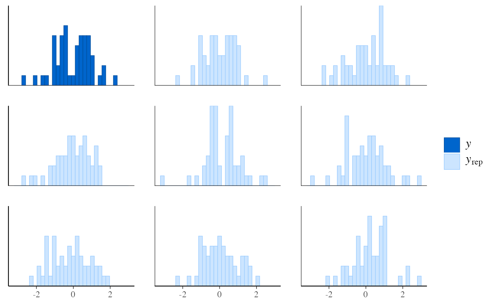

Posterior predictive checks (S3 generic and default method)
pp_check.RdS3 generic with simple default method. The intent is to provide a generic so
authors of other R packages who wish to provide interfaces to the functions
in bayesplot will be encouraged to include pp_check methods in
their package, preserving the same naming conventions for posterior
predictive checking across many R packages for Bayesian inference. This is
for the convenience of both users and developers. See the Details
and Examples sections, below, and the package vignettes for examples
of defining pp_check methods.
pp_check(object, ...) # S3 method for default pp_check(object, yrep, fun, ...)
Arguments
| object | Typically a fitted model object. The default method, however,
takes |
|---|---|
| ... | For the generic, arguments passed to individual methods. For the
default method, these are additional arguments to pass to |
| yrep | For the default method, a |
| fun | For the default method, the plotting function to call. Can be any
of the PPC functions. The |
Value
The exact form of the value returned by pp_check may vary by
the class of object, but for consistency we encourage authors of
methods to return the ggplot object created by one of bayesplot's
plotting functions. The default method returns the object returned by
fun.
Details
A package that creates fitted model objects of class "foo"
can include a method pp_check.foo that prepares the appropriate
inputs (y, yrep, etc.) for the bayesplot functions. The
pp_check.foo method may, for example, let the user choose between
various plots, calling the functions from bayesplot internally as
needed. See Examples, below, and the package vignettes.
Examples
# default method y <- example_y_data() yrep <- example_yrep_draws() pp_check(y, yrep[1:50,], ppc_dens_overlay)#># defining a method x <- list(y = rnorm(50), yrep = matrix(rnorm(5000), nrow = 100, ncol = 50)) class(x) <- "foo" pp_check.foo <- function(object, ..., type = c("multiple", "overlaid")) { y <- object[["y"]] yrep <- object[["yrep"]] switch(match.arg(type), multiple = ppc_hist(y, yrep[1:min(8, nrow(yrep)),, drop = FALSE]), overlaid = ppc_dens_overlay(y, yrep)) } pp_check(x)#>pp_check(x, type = "overlaid")